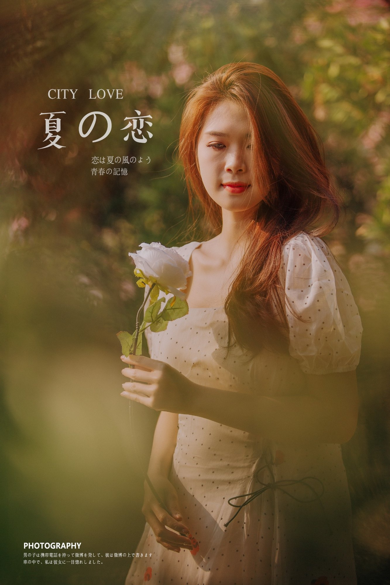
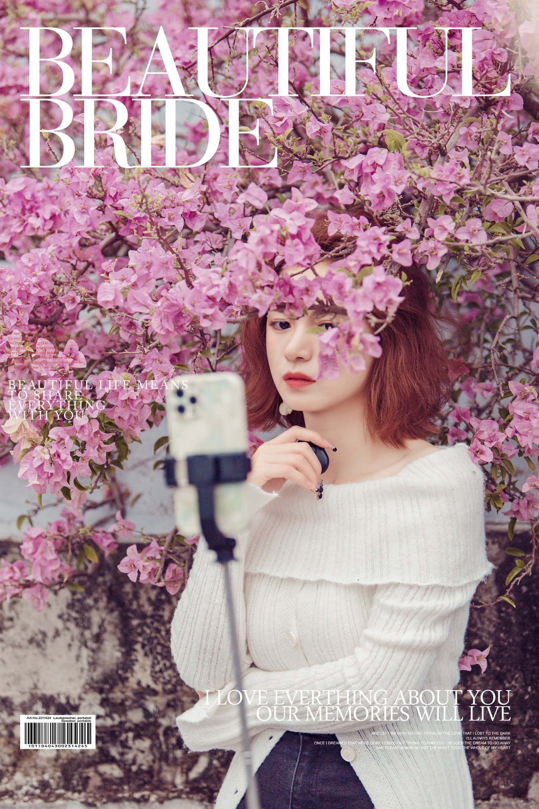

⌘
企业架构与技术治理
系统架构、国产化适配、数据库与中间件治理、性能优化、稳定性建设和技术标准。
一名长期站在业务与技术交汇处的实践者。关注企业级架构、工程质量与 AI 应用， 也持续探索人工智能如何为能源行业带来真正可衡量的改变。 相信好的技术不止于先进，更要可靠、可用、可持续。
既关注技术深度，也关心团队协作、交付质量和业务结果。
我的工作横跨技术研究、架构设计、技术治理与项目支撑。 喜欢把复杂问题拆解清楚，再用工程化的方法推动解决；也乐于把实践沉淀成方法、工具和可复用的知识。
在复杂企业系统中做扎实的工程，在快速变化的 AI 世界里做有价值的探索。
系统架构、国产化适配、数据库与中间件治理、性能优化、稳定性建设和技术标准。
大模型应用、RAG、文本相似度、智能检索、Agent、AI Coding，以及从原型到工程落地。
电力交易业务理解，新能源风光功率预测，机器学习特征工程与模型评估。
Playwright、API 与 Web 联合测试、测试资产沉淀，以及 AI 辅助用例生成和故障分析。
全文检索、向量检索、语义召回、重排与融合检索，让知识更容易被找到和复用。
把工作中的方法论、工具和经验整理成课程、专栏、培训与可复用产品。
不追逐概念本身，更在意它解决了什么问题、留下了什么能力。
围绕多场站预测任务开展特征工程、时序验证、样本权重与模型对比，持续探索机器学习在新能源功率预测场景中的应用方法。
聚焦数据库、中间件、缓存、SQL 性能和高可用设计，通过问题定位、方案评审、技术规范与治理机制提升系统可靠性。
以 TypeScript 与 Playwright 为基础，探索 API / Web 联合测试、测试用例生成、失败分析和持续集成中的 AI 辅助能力。
研究全文检索、Embedding、向量召回、重排与结果融合，探索项目任务和文档内容的相似发现与辅助审查。
工作之外，也喜欢带着相机观察世界。用镜头记录人物、城市、光线与那些稍纵即逝的瞬间。
摄影对我来说，是另一种思考方式：放慢一点，留意细节，也重新发现熟悉事物的不同侧面。


持续记录值得复盘的技术实践，也记录技术背后的判断与取舍。
架构设计不只是技术选型，更是职责、约束与协作方式的设计。
从一个可验证的小场景开始，关注准确性、成本、风险和人的反馈。
工具、模板、案例和方法论，都是个人与团队长期积累的复利。
技术的价值，不在于用了多新的工具，而在于是否让复杂的事情变得更简单，让重要的事情变得更可靠。
KEEP BUILDING · KEEP LEARNING